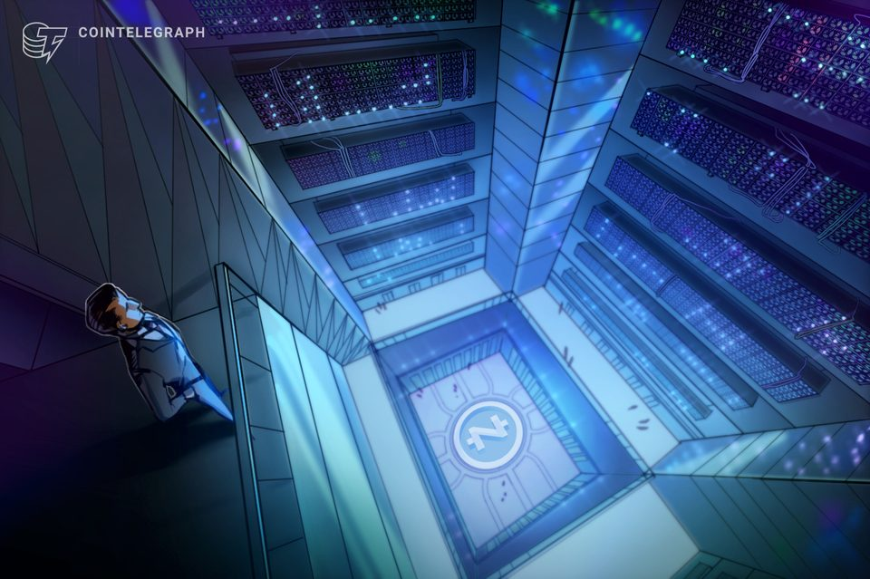
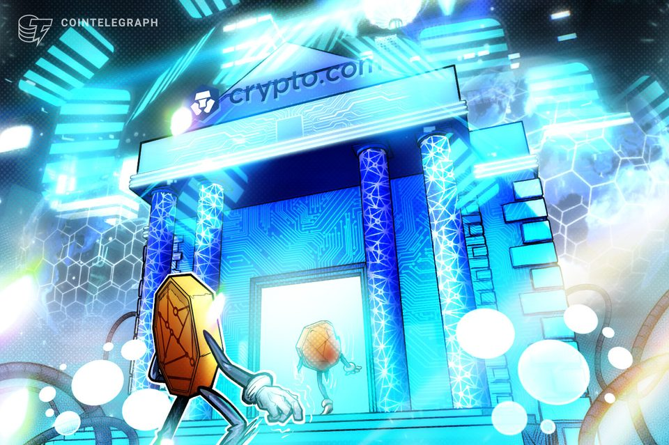
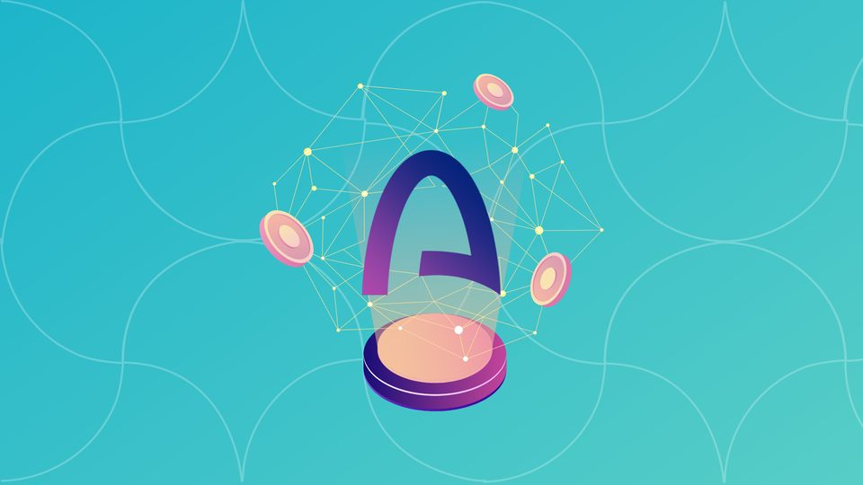

Zcash miner Fortitude taps former Hut 8 CEO to lead ahead of public listing
Former Hut 8 CEO Jaime Leverton will take the helm at Fortitude as the Zcash-focused miner expands its operations and moves toward a planned public listing.
Cardano's Splash fix patches the exploit, but leaves 2.4M ADA missing and holders trapped
The exploit drained 2.42 million ADA net, while OADA lacks protocol redemption and faces a thin-pool overhang. The post Cardano’s Splash fix patches the exploit, but leaves 2.4M...
FCA Targets Three More London Sites Over Unregistered P2P Crypto Trading
"Anyone running an unregistered peer-to-peer crypto business should assume we are looking at them," the FCA's enforcement chief said.

Clarity Act failure may hamper U.S. crypto as industry seeks legal clarity elsewhere
Clarity Act failure may hamper U.S. crypto as industry seeks legal clarity elsewhere

Here's what happened in crypto today
Need to know what happened in crypto today? Here is the latest news on daily trends and events impacting Bitcoin price, blockchain, DeFi, Web3 and crypto regulation.
Lawmakers pass bill to freeze federal Bitcoin holdings for two decades
ARMA would lock qualifying reserve Bitcoin in place from enactment and require annual audited reporting, while purchases remain a study. The post Lawmakers pass bill to freeze...
SEC Clears a Path for Tokenized Stocks After Clarity Act Stumbles
The "innovation exemption" lets qualifying venues trade tokenized versions of U.S. stocks on public blockchains without registering as exchanges—though it excludes price-tracking...

Ratings giant S&P Global acquires OpenZeppelin in tokenized finance risk push
Ratings giant S&P Global acquires OpenZeppelin in tokenized finance risk push

OG.com cleared by SEC to offer single-stock futures, says Crypto.com CEO
Crypto.com’s CEO said its sister exchange was cleared to offer US access to single-stock perpetual futures, as the latest platform to bridge TradFi and digital assets.
Why standard Bitcoin transfer figures are off by up to six times, according to the BIS
The working paper says contract proliferation and cross-chain stablecoin use make raw activity totals noisy measures of economic reality. The post Why standard Bitcoin transfer...

What Is Arc? The Stablecoin Blockchain From USDC Issuer Circle
Arc is a new layer-1 blockchain developed by USDC issuer Circle, designed specifically for stablecoin-native finance.

SEC rolls out long-awaited 'innovation exemption' for tokenized securities venues
SEC rolls out long-awaited 'innovation exemption' for tokenized securities venues